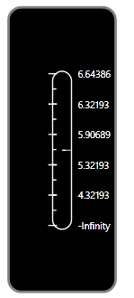

Essential Linear gauge for Windows Phone supports logarithmic label ticks. This can be achieved by setting the IsLogarithmic property to True, and specifying a valid LogBase value. The value of the LabelTickSet is calculated based upon the base provided in the Logbase.
|
[XAML]
<syncfusion:LinearGauge Height="450" Width="170" Orientation="Vertical" x:Name="LinearGauge1" RadiusX="20" RadiusY="20" BorderBrush="Gray" BorderThickness="4" OuterFrameBrush="Black"> <syncfusion:LinearGauge.Scales> <syncfusion:LinearScale Minimum="0" Maximum="100" Foreground="#7B7C7C" MajorIntervalValue="20" MinorIntervalValue="10" ScaleBarSize="30" ScaleBarLength="250" ShadowOffset="4" BorderBrush="White" BorderThickness="2" RadiusX="15" RadiusY="15"> <syncfusion:LinearScale.Ticks> <syncfusion:LabelTickSet Foreground="White" IsLogarithmic="True" LogBase="2" TickPlacement="Inside" DistanceFromScale="10" TickStyle="MajorTick"/> <syncfusion:MarkTickSet Background="#7B7C7C" TickHeight="6" TickWidth="2" DistanceFromScale="12" TickPlacement="Cross" TickShape="Rectangle" TickStyle="MinorTick" /> <syncfusion:MarkTickSet Background="white" Opacity="0.7" TickHeight="14" TickWidth="2" TickPlacement="Cross" TickShape="Rectangle" DistanceFromScale="15" TickStyle="MajorTick"/> </syncfusion:LinearScale.Ticks> </syncfusion:LinearScale> </syncfusion:LinearGauge.Scales> </syncfusion:LinearGauge>
|
|
[C#]
LabelTickSet labeltickset = new LabelTickSet(); labeltickset.DistanceFromScale = 25; labeltickset.LabelForeground = new SolidColorBrush(Colors.White); labeltickset.TickStyle = TickStyle.MajorTick; labeltickset.FontSize = 12; labeltickset .IsLogarithmic = true; labeltickset.Logbase= 2; labeltickset.TickPlacement = ScalePlacement.Cross; linearscale.Ticks.Add(labeltickset); |

Figure 57: Logarithmic Scale with logbase-2